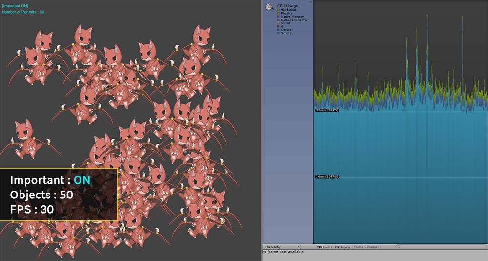
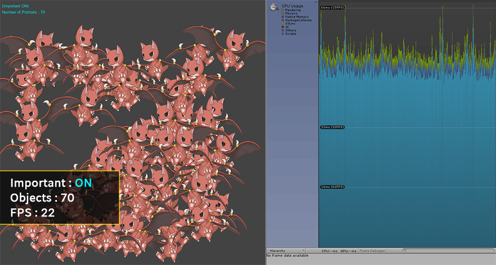
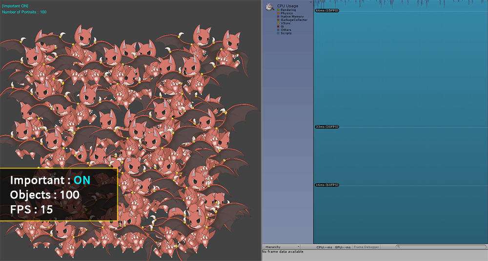
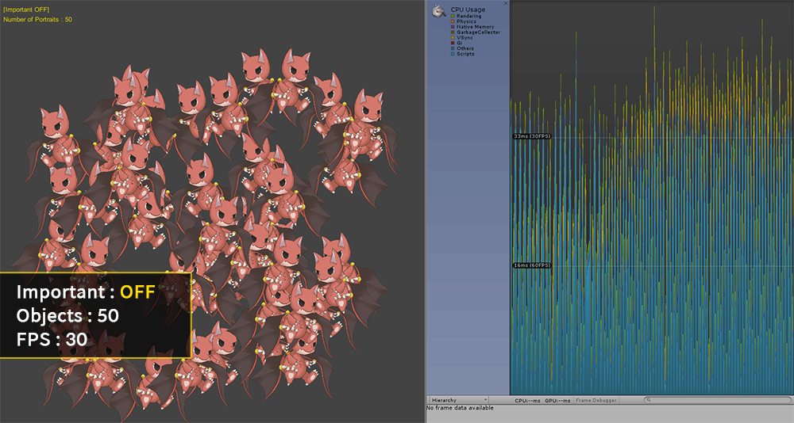
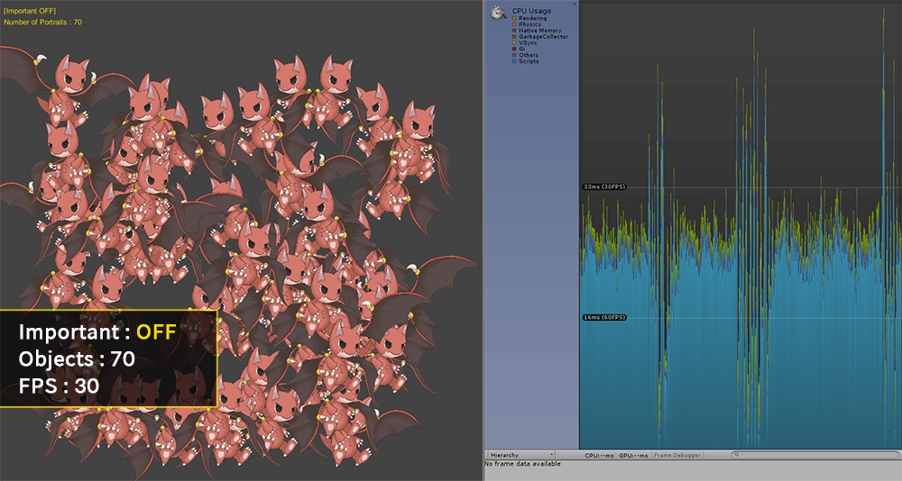
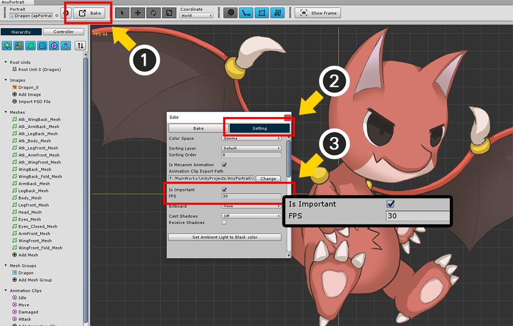
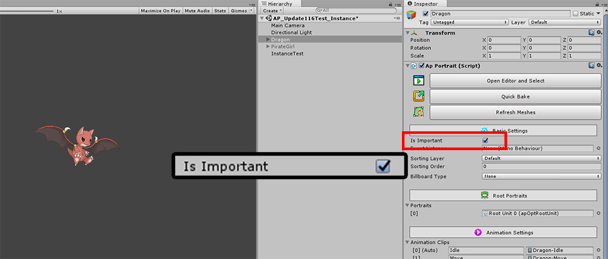

AnyPortrait > Manual > "Important" option and many objects
"Important" option and many objects
1.2.3
When you create a game, there are often a lot of characters appearing on the screen.
A common example is when a player and a large number of monsters appear.
However, if many characters appear, the game will be very slow and you will not be able to play the game.
Changing the "Important option" of AnyPortrait can improve performance.
- Important option is on: Updated every frame to smooth the animation. (Default)
- Important option is off: Update frames are limited, resulting in a slight drop in animation quality but improved performance. Physics features (Jiggle Bone, Physics Modifier) are disabled.
It is generally recommended to turn on the Important option for important objects such as player characters,
and it is recommended that you turn off the Important option for monsters or background objects that may appear in multiple but lower quality animations.
In the profiling results below, you can see performance differences depending on the value of the Important option.
(The results of the experiments below can be measured differently depending on the complexity of the character, the execution environment, and the composition of the scene.)

It is a screen in which 50 characters in animation are played.
The character's Important option is on, and Frames Per Second (FPS) is around 30.

20 characters are created and a total of 70 characters are placed.
As the characters are added, the FPS decreased to 22 FPS.

FPS is reduced to 15 since 100 characters are placed.
If the performance drops like this, normal gameplay will not be expected.

Now we turn off the Important option and try to place the characters.
The value of "FPS" of the character's Important option is 30.
When 50 characters are placed, the FPS is recorded as 30, just as if the Important option was turned on.
In this state, you can see that the FPS in the profiler is somewhat unusual because the animation is not updated every frame.

This screen is the result of placing 70 characters.
FPS is 30 or better, which is better than when the Important option is turned on.
AnyPortrait performs batch management of updates of the same characters with the Important option turned off.
And in this process, we want to handle the updates of the characters in different frames as possible.
However, if the FPS changes due to other factors, AnyPortrait adjusts the update timing of the characters, which can cause temporary frame spikes.
(Unity's FPS changes periodically for reasons such as memory management.)

This is the result of placing 100 characters.
The FPS is slightly reduced, but it is recorded around 27, which is better than when the Important option is turned on.
You can see using the profiler that updates of characters are distributed evenly across all frames.

There are several ways to change the "Important option".
First, let's change the options in the Bake dialog.
(1) Press the Bake button.
(2) Select the Setting tab.
(3) Click the "Is Important" item to change the setting.
The "FPS" option is the update frequency when the Important option is off.
(Normally values of 15, 20, and 30 are recommended.)

You can also change the settings by clicking the "Is Important" item in the Inspector UI.You can also use the script to change the Important option.
Please check the "SetImportant(bool)" function in related page.
If you use scripts, you can change the options in real time, which will help you optimize your game.
Note.
Handling when characters run with a fixed FPS with the Important option disabled is improved in v1.2.3.
It is improved so that intermittent frame Spike is not occurred.
Starting with this version, fixed FPS is limited to running at half or less of the game's FPS.
If the game's FPS is set to a low or too high fixed FPS value, it is forced to run at half or less of the game's FPS.